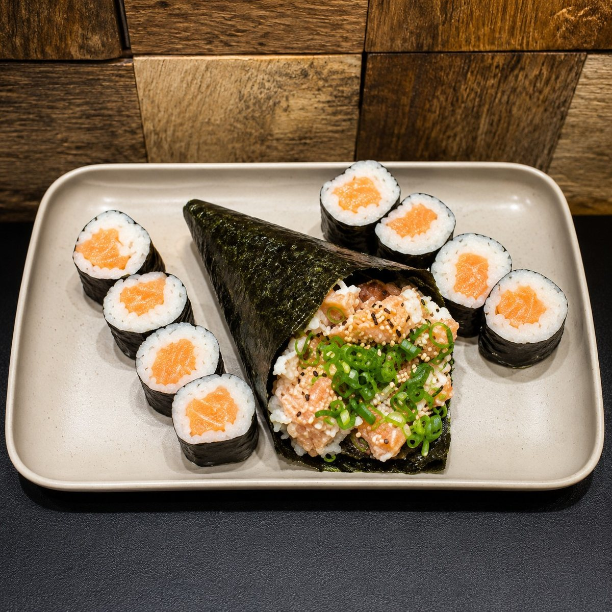

Início · Sushi Dog e temakis
Sushi Dog, temakis e hots
O sushi em formato de hot dog, os temakis de salmão e de camarão (cru ou frito) e os combos que juntam temaki e hot.
Lu' SushiJaponês de delivery · 18h às 22h · terça fechado
Sushi Dog
Empanado, frito e recheado
“Sushi formato de hot dog. Crocância, frescor e uma explosão de sabor”Cardápio do Lu' Sushi
- Sushi Dog Salmãosalmão, cebola roxa e cream cheeseR$ 49,90
- Sushi Dog Camarãocamarão, cebola roxa e cream cheeseR$ 54,90
Temakis
Cru ou frito, salmão ou camarão
- Temaki Salmão com cream cheese160 g · com gergelimR$ 39,99
- Temaki hot de salmãoempanado na panko e fritoR$ 48,99
- Temaki camarãocom cream cheese e gergelimR$ 47,99
- Temaki camarão fritocrocante por fora, cremoso por dentroR$ 49,99
“Fresquinho, recheado e feito na hora.”@lusushioficial, 22/07/2026
Combos
Temaki com hot ou hossomaki
- 2 temakis + 8 hots de salmãopara doisR$ 79,90
- 1 temaki + 8 hossomakissalmão cruR$ 59,90
- Combo Temático1 temaki + 8 hots FiladélfiaR$ 55,90

Hots
8 unidades, empanados na panko
- Hot Filadélfia Salmão8 unidadesR$ 28,90
- Hot Filadélfia Camarão8 unidadesR$ 29,90
- Combo Hot Prime20 peçasR$ 49,99

Dúvidas frequentes
Perguntas comuns
O Sushi Dog vem com molho?
Sim: o de salmão vem com 2 sachês de teriyaki e 2 de shoyu; o de camarão, com 3 de teriyaki e 2 de shoyu.
Qual a diferença do temaki hot?
O hot é enrolado, empanado na panko e frito até dourar; o tradicional vem cru, com cream cheese e gergelim.
Hoje tem sushi?
A cozinha abre às 18h.
Delivery de quarta a segunda, das 18h às 22h, para nove bairros entre a Boca do Rio e o Cabula. Pedido mínimo de R$ 30.